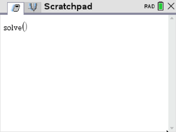
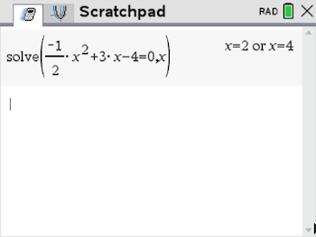

Nullstellen bestimmen
Bestimme die Nullstellen von f(x) = - \frac{1}{2} x^2 + 3x - 4.
Entweder solve im CAS eintippen oder
über die Kurzwahl: b 3 1

In der solve-Klammer die Funktion =0 setzen, und dann die Variable x angeben.

Lösung: x_1 = 2,\ x_2 = 4